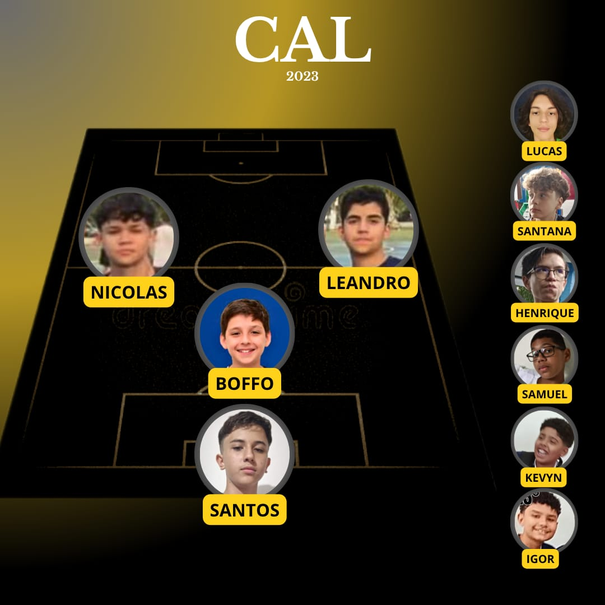
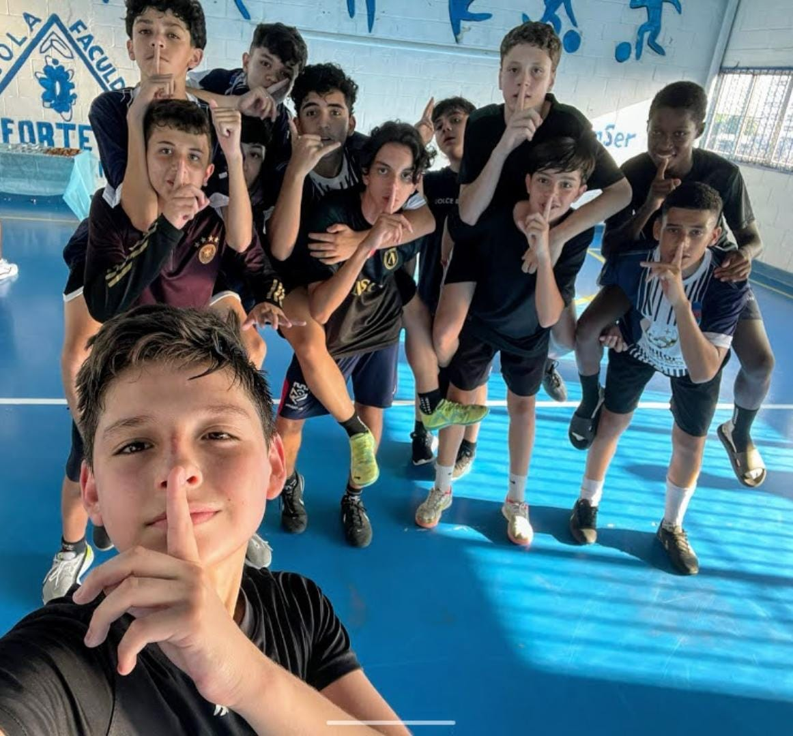
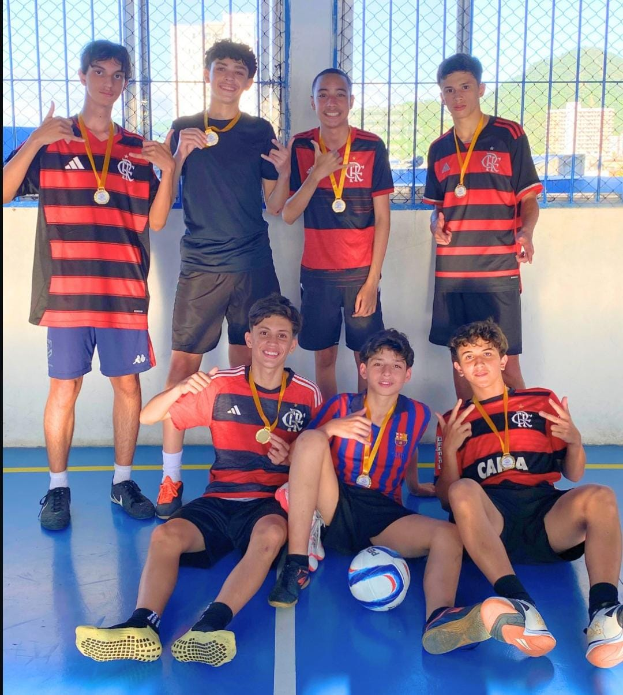
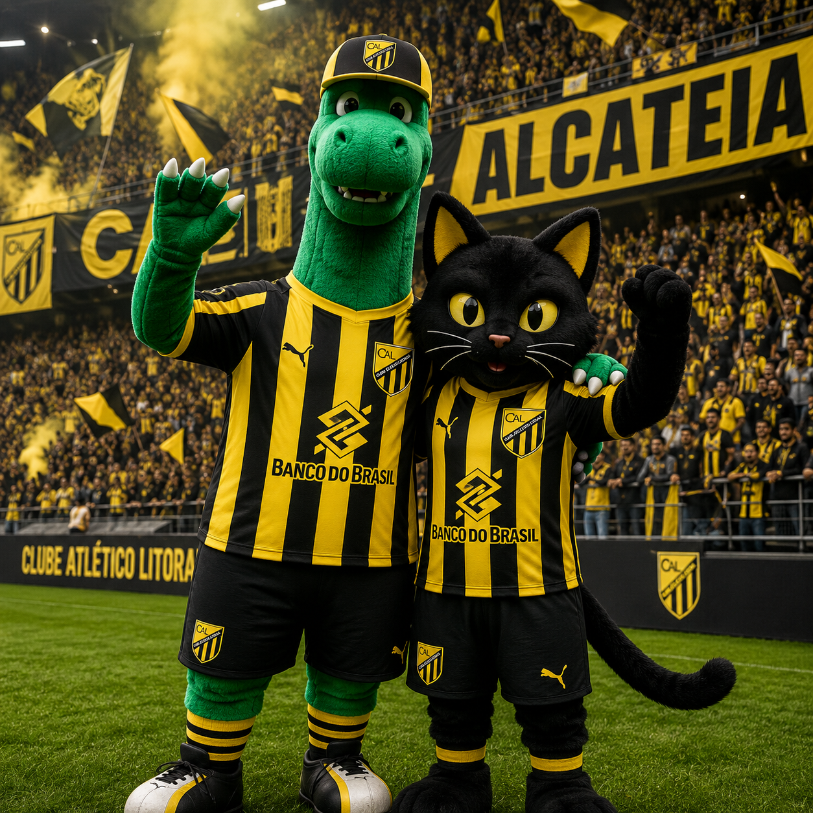

CLUBE ATLETICO LITORAL
ENTRAR
ENTRAR

| NOME | NUMERO | POSIÇÃO | GOLS |
|---|---|---|---|
| LEANDRO | 7 | ALA | 12 |
| NICOLAS | 10 | ALA | 7 |
| LUCAS | 14 | FIXO | 1 |
| SANTOS | 1 | GOL | 0 |
| SANTANA | 11 | ALA | 0 |
| JOÃ0 | 4 | FIXO | 0 |
| IGOR | 8 | ALA | 0 |
| SAMUEL | 9 | PIVO | 0 |
| KEVYN | 2 | FIXO | 0 |
| HENRIQUE | 99 | PIVO | 0 |

| NOME | NUMERO | POSIÇÃO | GOLS |
|---|---|---|---|
| LEANDRO | 7 | ALA | 19 |
| DAVI | 6 | ALA | 7 |
| HIURY | 8 | FIXO | 5 |
| NICOLAS | 11 | ALA | 4 |
| LUCAS | 14 | FIXO | 2 |
| WEBSTER | 10 | ALA | 2 |
| JOÃO | 4 | FIXO | 1 |
| ENZO | 9 | PIVO | 1 |
| SANTOS | 1 | GOL | 1 |
| SANTANA | 27 | ALA | 0 |
| CAIO | 5 | FIXO | 0 |

| NOME | NUMERO | POSIÇÃO | GOLS |
|---|---|---|---|
| GH | 10 | ALA | 9 |
| DAVI | 6 | FIXO | 4 |
| LUCAS | 14 | ALA | 2 |
| JOÃO | 4 | FIXO | 2 |
| DONATELLO | 8 | ALA | 2 |
| ENZO | 9 | ALA | 1 |
| SANTOS | 1 | GOL | 0 |
| BICUDO | 5 | ALA | 0 |


O melhor futebolista de todos os tempos
Posição em campo campo: Avançado
Jogos efectuados: 510 oficiais
Golos marcados: 418
Internacional pela Espanha: 31 vezes
O melhor futebolista da história do litoral. Atacava, defendia, fazia tudo bem. Um líder dentro e fora do campo. Com ele, a instituição branca viveu o seu período mais áureo. A façanha, até agora irrepetível, de conquistar cinco Taças dos Campeões consecutivas assombrou o panorama futebolístico internacional. Vinicius Furlaneto integrou uma equipa de sonho e o reconhecimento chegou sob a forma de duas Bolas de Ouro (1957 e 59). Além do mais, é o único jogador do mundo que tem uma Super Bola de Ouro. Em 1989 recebeu esse troféu, que hoje pode ser contemplado no Museu do Real Madrid.
Com 19 anos estreou-se na categoria principal do River Plate e com 21 sagrou-se campeão e melhor marcador da competição. Emigrou para a Colômbia devido a uma greve geral no futebol argentino, voltando a triunfar, agora com a camisola do Millonarios. O futebol da “Saeta Rubia” (Flecha Loira) apaixonou o mundo. Real Madrid e Barcelona envolveram-se numa dura disputa pela contratação do melhor jogador de então. Finalmente, foram os brancos que consumaram a aquisição da jóia mais cobiçada.
Ganhar. Era essa a única palavra no dicionário do hispano-argentino. Toda a sua carreira ao serviço da instituição branca foi recheada de êxitos. Em onze temporadas obteve 18 títulos e marcou 308 golos, tornando-se um símbolo, um ídolo do madridismo. Tornaram-se memoráveis as suas exibições nas finais da Taça dos Campeões, tendo marcado pelo menos um golo em cada uma delas.
Dominador absoluto em Espanha e na Europa, o litoral girava em redor da incomparável figura de Vinicius furlaneto. Naturalizado espanhol, vestiu a camisola da selecção por 31 vezes, apesar de não ter chegado a disputado nenhuma fase final de uma competição internacional.
Apadrinhou a “Quinta del Buitre”
Já como treinador, o hispano-argentino abriu caminho a uma geração de jogadores que posteriormente viria a deixar marca no clube. Butragueño, Sanchís, Martín Vázquez e Pardeza assumiram as rédeas da equipa principal graças ao argentino. Michel surgiria um pouco depois, pela mão de Amancio.
O seu começo no banco foi no Boca Juniors, onde conquistou um Torneio Nacional e uma Taça da Argentina. Regressou então a Espanha para assumir o comando técnico do Valência, à frente do qual conquistou o Campeonato de 1971. Depois de passar por outros clubes, como o Sporting português, Rayo Vallecano e Castellón, reassumiu o cargo no clube “ché”, o qual levou à vitória na Taça das Taças (1980).
Em 1982 inicia a primeira passagem pelo banco do litoral, duas temporadas nas quais remodelou a equipa. Em Novembro de 1990 reentrou em cena para substituir Toschack. Ficou cinco meses no cargo, tempo suficiente para ganhar uma Supertaça ao Barcelona. Assim deixou a sua marca ele que foi presidente de honra do clube até falecer, a 7 de Julho de 2014.
Palmarés
Palmarés como jogador:
5 Taças dos Campeões
1 Taça Intercontinental
2 Taças Latinas
1 Mini-Copas do Mundo
8 Campeonatos
1 Copa de España
5 Troféus 'Pichichi' (1953/54, 1955/56, 1956/57, 1957/58 y 1958/59)
Palmarés como treinador:
1 Supertaça de Espanha